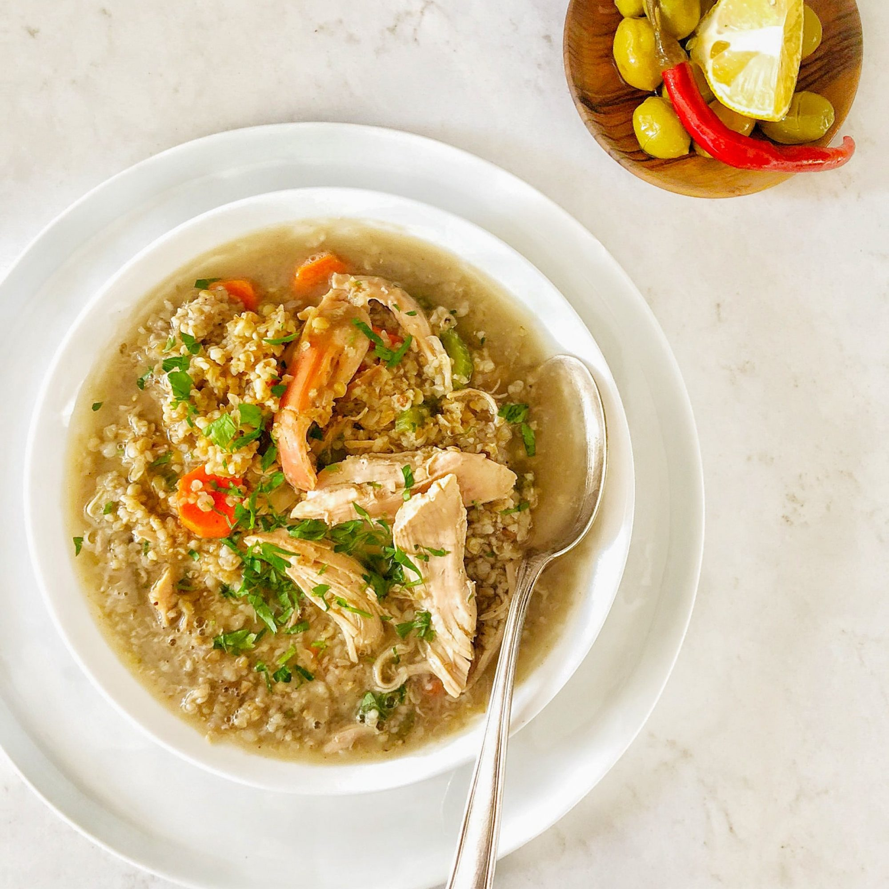

Freekeh
Freekeh (in the Levant) or Freekeh (in Egypt and North Africa) is a food product of wheat or green wheat. Its ears are harvested, which are soft green before drying and exposed to heat by burning them, then crushed to become solid and ground grains like dry wheat groats and have the size of dry wheat groats. Bigger than bulgur grains.
